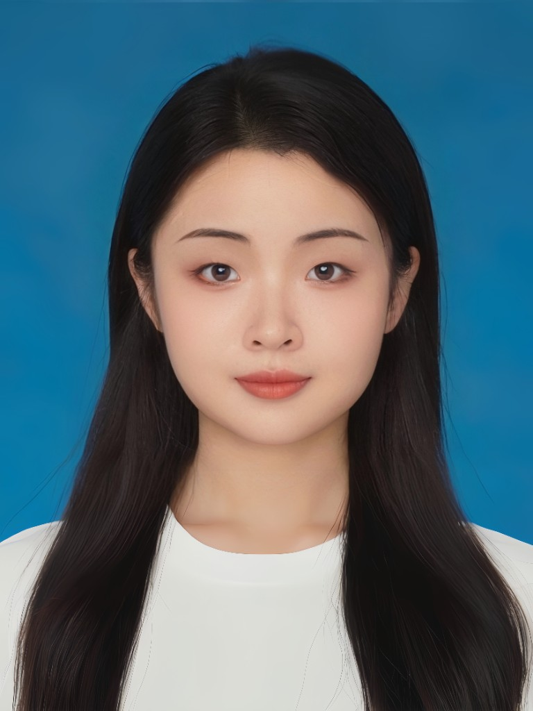

AI Product × Workflow Systems × Agent Infrastructure

Abstract manual workflows into reusable AI agents
Build closed-loop production pipelines
Design measurable feedback and optimization systems
Bridging the gap between disciplines
Uncover real tasks and trust issues. Validate if AI actually solves the problem or just adds friction.
Align capability, evaluation metrics, and trade-offs. Translate business needs into model-evaluable criteria.
Define latency limits, fallback mechanisms, and shipping scope. Ensure the architecture supports iterative scaling.
Shape AI interactions that feel usable and trustworthy. Design for error recovery and human-in-the-loop flows.